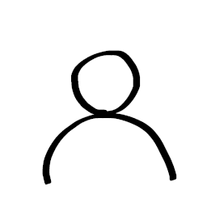
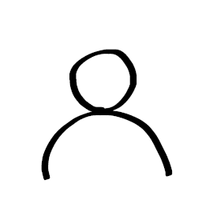

2022年10月30日
2022年10月分の月末アップデートについて
しょ碁スというボードゲームがあるのですが、
それの実装をしていたら、こちらの月末アップデートができませんでした。しょ碁スの方も頑張って実装したので、是非遊んでみてください。
2022年7月3日
2022年6月分の月末アップデートについて
単純に月末であることを忘れていました。よって2022年6月分の月末アップデートは無しとなってしまいました。
2022年5月2日
2022年4月分の月末アップデートについて
開発者が4月29日に体調を崩したので、2022年4月分の月末アップデートは無しとさせていただきます。
代わりに、「【90秒で分かる】パイグ民族の伝統遊戯 机戦の遊び方」動画のBGMで用いられている曲の前半部分の歌詞を公開しました。皆さん是非歌ってみて下さい。


2021年12月30日
ゲームマーケット大阪2022物販告知
諸事情により、今月のアップデートの代替としましてゲームマーケット大阪2022の告知をお送りいたします。
2022年2月6日（日）開催のゲームマーケット大阪2022にて、机戦及び紙机戦の販売をいたします（ブース概要）。是非来場いただき、お買い求めください。また、BOOTHでのネット販売も予定しております。


製作の様子については、こちらの記事も併せてご覧ください。
2021年12月1日
小冊子「アイル共和国統一 机戦規則」先行公開


ゲームマーケット大阪2022で配布予定の冊子の原稿を先行公開しました。かなり丁寧で包括的な記述を心掛けましたので、ダウンロード・投げ銭いただければ幸いです。
2021年11月30日
[0.2021.11] 月末アップデート（2021年11月）内容告知
今月は月末以外にリファクタリングをしましたが、機能追加に関しては月末まわりに行いました。今回は先に機能追加がされ始め、その後に以下の告知ツイートを打ちました。
結果としては、以下の改善を入れることができました。
- 投げ棒周りの改良
- 相手側が指したときに投げ棒の音が一切鳴らないバグがあったので、修正しました。
- 各季節の前に、投げ棒を投げて手番を決定する操作が入るようになりました。
- 棋譜改良
- 今までは春のみの先手が棋譜に表示されていましたが、全季節について出た方がわかりやすいので、そうしました。
- 今までは、手駒から駒が動いたときか、動いた駒が【皇】である場合以外においては、棋譜上で「片」と表示されていましたが、これでは実際問題棋譜が読みづらいので、駒の職業が棋譜で出るようにしました。
- UI改良
- 「棋譜を見ると PIA とか ZO
とか書いてあるけど、どのマスなのかパッとは分からないよ」という声にお答えして、座標表示のオンオフを切り替えることができるようにしました。なんだかんだデザイン面で手直しすべき箇所が多く、結局これの実装だけで
4 時間ぐらいかかってしまいましたね。
- 試合開始前においては両方のアイコンが薄くなるようにしました。
- ドキュメンテーションの改善
- ephemera
フォルダを作成し、リファクタリングによってガンガン古びていくことを想定した一時的ドキュメンテーションを書きました。
- 内部的改良・開発環境の改良
- ファイルの役割分担を改良しました。特に、src/opponent_move.ts から export されるものが大幅に整理されました。
- ファイル間の依存関係を若干きれいにしました。
- tslint になっていたのを eslint にし、デッドコードなどを検出し、改善しました。
- prettier がしっかり適用されるようになりました。
- npm run start や npm run build がちゃんとローカル環境でも動くようになりました。
- API が serde-friendly になったので、バックエンドを serde 化する準備ができました。
2021年10月31日
[0.2021.10] 月末アップデート（2021年10月）内容告知
今月はわりと月末以外にもアプデをしたものの、月末アップデートは行うこととしているので、とりあえず以下の告知ツイートを打ち、打った後にアプデ内容を考え、太平洋夏時間10月28日正午～太平洋夏時間10月31日23:59（日本時間10月29日04:00～11月1日15:59）でメンテを行いました。
結果としては、以下の改善を入れることができました。
- README.mdの改良
- このプロジェクトに関する文脈を追いやすくなりました。
- バグ修正
- 駒を踏んで判定なく元の位置に戻ったとき、最後に指した位置を表す黄色の枠線が更新されないというバグを修正しました。
- 試合終了時刻の表示
- 試合が終了したときの時刻も棋譜に記録するようにしました。
- UI改良
- 皇処之将で守られている駒を踏越え後に取ろうとすると、が表示されるようにして、守られていて取ることができないということを表すようにしました。
- 「待機中」画面にちょっとしたアニメーションを配置しました。
- entrance.html の多言語対応
- entrance.html において日本語で書かれている部分をリパライン語に差し替えることができるようになりました。それに伴い、entrance.html
に言語切り替えボタンが付くようになりました。
- 内部的改良
- ステージング環境のマッチングにおいてはバックエンドにおいて異なるURLで取り扱うように変更しました。
- 最後に指した位置を表す黄色の枠線を、相対座標ではなく絶対座標でデバッグ出力するようにしました。
2021年10月3日
[0.2021.10-rc.1] 追加アップデート内容告知
2021年9月の月末アップデートを行ったあと、いくつか追加でアップデートを加えましたのでお知らせします。
- UI改良
- 役一覧の画像が「再行」「終季」のボタンと被るという問題があったので、役が表示されていて「再行」「終季」のボタンが出ている場合には画像が右にズレるようになりました。
- バグ修正
- 踏越え後の無限移動を相手が試みたときに出る黄緑色の矢印は、今までずっと複数のPNG画像をタイル状に配置することで実現していましたが、今回これを単一のSVGとしてレンダリングすることにより、微妙に隙間が空いたりズレたりといった問題を解決しました。
- 内部的改良
- main.tsがあまりにも多くの機能を抱え込んでいたので、draw_erase_animate.tsというモジュールを増やし、一部をそちらに移動しました。
- ct.png や ct2.png といった一部の画像名を変更し、ソースコードの可読性の改善に繋げました。
2021年10月1日
[0.2021.9] 月末アップデート（2021年9月）内容告知
nヶ月メンテしないと再びやり始めるのがだいぶしんどいので、月末アップデートを定期化するようにしてみようと考え、とりあえず以下の告知ツイートを打ち、打った後にアプデ内容を考え、太平洋夏時間9月28日正午～太平洋夏時間9月30日23:59（日本時間9月29日04:00～10月1日15:59）でメンテを行いました。
結果としては、以下の改善を入れることができました。
- このブログの開設
- 棋譜表示機能
- 前々から皆に望まれていた棋譜表示機能が、ついに追加されました。
- 取った駒もコメントに入るので、どこでどの駒を取って役の成立に至ったのかがとても追いやすくなっています。
- 役早見表の追加
- これにより、役を覚えていない人も別窓で役の一覧などを開く必要がなくなりました。
- UI改良
- 相手側が「再行」「終季」を押した際に、自分側には相手の選択が表示されるのですが、その表示時間が少し短かったので長くしました。
- 投げ棒の音や、相手が指したときの駒の音をオフにできる機能を追加しました。
- BGMがオンオフできるようになりました。
- バグ修正
- 踏越え後に入水判定が失敗すると、最後に指した位置を表す黄色の枠線が正しく表示されないというバグがあったので、修正しました。
- 実は踏越え後でなくても枠線表示は失敗してました。修正しました。
- 相手側が踏越え判定に成功した後に入水判定に失敗した場合に、入水判定がまるで行われなかったかのように表示されるという深刻なバグがあったので修正しました。
- 内部的改良
- 点数表示時の数字の画像をリネームしました。
- 依存ライブラリのバージョンを上げまくりました。
2021年8月31日
[0.2021.8] 月末アップデート（2021年8月）内容告知
最近あまり cerke_online
に機能が追加されていないことを憂えて、ひとつ時間を区切って一気に大きめのアップデートを入れようと考え、日本時間8月24日16:00～8月31日23:59でメンテを行いました。ということで、以下の告知ツイートを打ち、メンテを開始しました。
結果としては、以下の改善を入れることができました。
-
CPU対戦の実装
- CPUとプレイヤーを表すためのいい感じのアイコン
 を、藍碌(Airoku)さん
を、藍碌(Airoku)さん に書いて頂けました。ありがとうございます。
に書いて頂けました。ありがとうございます。
- CPUが考えるのに使った戦略を通知・表示する仕組みを実装しました。現時点では日本語での表示にのみ対応していますが、今後は燐文対応も考えていきたいと思います。
- 具体的には、以下のような実装になっています。
- 「入水判定が必要であるか、4以上の踏越え判定が必要である」を「やりづらい(unlikely to
succeed)」と定義する。相手がある駒を取るのが「やりづらい」に相当する、若しくは不可能である、という場合、それを「取られづらい」と定義する。「入水判定も要らず、2以下の踏越え判定しか要らない」を「やりやすい(very
likely to succeed)」と定義する。
- 『無駄足は避けよ』：そもそもスタートとゴールが同一地点の手ってほぼ指さなくない？
- 『無駄踏みは避けよ』：踏まずに同じ目的地に行く手段があるなら、踏むな。
- 『勝ち確は行え』：駒を取って役が新たに完成し、その手がやりやすいなら、必ずそれを行う。
- 『負け確は避けよ』：取られづらくない駒で相手が役を作れて、それを避ける手があるなら、避ける手を指せ。一方で、「手を指した後で、取られづらくない駒で相手が役を作れる」もダメだなぁ。
- 『激巫は行え』：取られづらい激巫を作ることができるなら、常にせよ。
- 『ただ取りは行え』：駒を取ったとしてもそれがプレイヤーに取り返されづらい、かつ、その取る手そのものがやりづらくないなら、取る。
-
画面サイズの修正
- main.htmlが全体的に少し大きく、ユーザー側で拡大率を下げるなど工夫が必要だったのを、修正しました。
-
点数盤のレンダリング高速化
- 今までは点数盤を単一画像としてレンダリングしていましたが、木目付きの背景と点数盤の文字を別画像に分けることによって、回線の遅い環境でも文字と目盛りはサッサとレンダリングされるようになりました。
-
UI改良
- 勝敗の表示にalertを使っていたのを、「CPUが考えるのに使った戦略を通知・表示する仕組み」があることを利用してそこに表示するようにしました。今後もalertの数を減らしていきたいと思います。
- 試合開始ボタンにマウスカーソルを載せるとサイズが変化するようにし、ボタンであるということが伝わりやすくなりました。
- 試合終了後、両方のアイコンが表示されるようになりました。
- main.htmlに直接リンクしたなどの原因によりセッションが無効な場合、entrance.htmlに戻されるようになりました。
-
内部的改良
- 今までは、cerke_onlineのサーバーにメッセージを送る際、毎回乱数を生成してidというフィールドに入れて送っていましたが、これは本当に何にも使っていない全くの無駄フィールドだったので、削除しました。